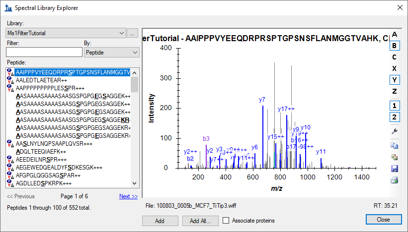
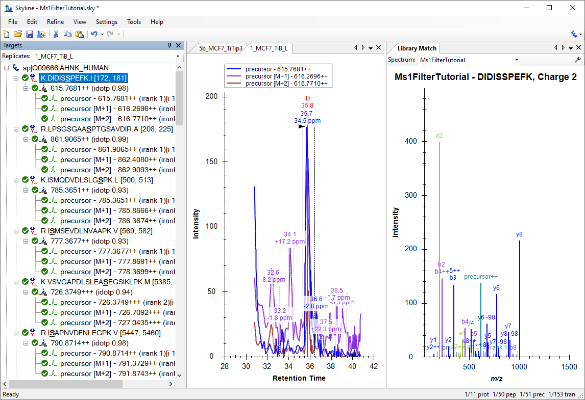
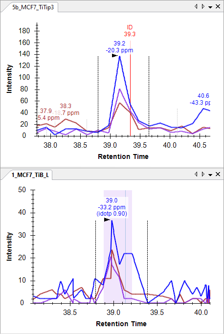
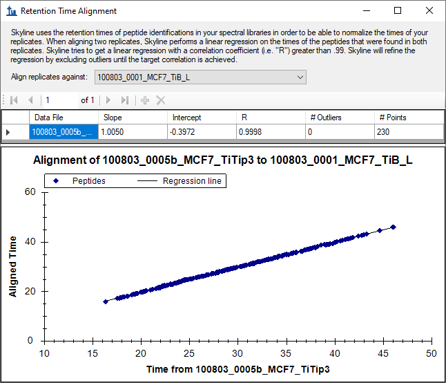
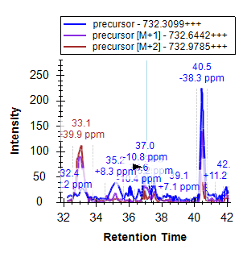
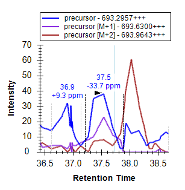
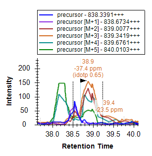
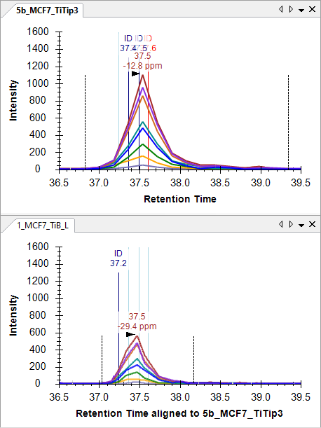
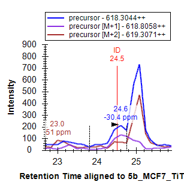
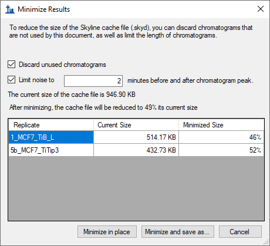

The Skyline Targeted Mass Spectrometry Environment provides informative visual displays of the raw mass spectrometer data you import into your Skyline documents. These displays allow you to manipulate the data by performing tasks such as refining the peptides and transitions you are measuring, and tuning integration boundaries. Originally developed to analyze quantitative assays from selected reaction monitoring (SRM – also referred to as multiple reaction monitoring or MRM) mass spectrometry, Skyline has been expanded to extract time-intensity chromatograms from MS1 spectra for use in peptide quantification experiments involving mass spec runs with data dependent MS/MS.
The Skyline MS1 Full-Scan Filtering1 supports importing data sets from discovery-type proteomics experiments where mass spectrometers were operated in data dependent acquisition (DDA) mode. After importing the raw data, new and previously existing Skyline features facilitate quantifying peptide precursor MS1 signal across many replicate acquisitions. This mode may also be used for visualizing and better understanding quantitative outputs from other “Label Free” quantitative tools, because of the exceptional data visualization plots in Skyline.
This tutorial will cover the following areas critical to making effective use of Skyline MS1 Filtering:
Skyline aims to provide a vendor-neutral platform for targeted mass spectrometry investigation. It can import raw data for MS1 filtering from the instrument vendors Agilent, Bruker, SCIEX, Shimadzu, Thermo-Scientific and Waters, making the expertise you gain here transferrable to any mass spectrometry lab with an instrument from one of these vendors.
To start this tutorial, download the following ZIP file:
https://skyline.ms/tutorials/MS1Filtering-22_2.zip
Extract the files in it to a folder on your computer, like:
C:\Users\brendanx\Documents
This will create a new folder:
C:\Users\brendanx\Documents\MS1Filtering
If you have been using Skyline prior to starting this tutorial, it is a good idea to revert Skyline to its default settings. To do so:

The document settings in this instance of Skyline have now been reset to the default.
Since this tutorial covers a proteomics topic, you can choose the proteomics interface by doing the following:

Skyline is operating in proteomics mode which is displayed by the protein icon  in the upper
right-hand corner of the Skyline window.
in the upper
right-hand corner of the Skyline window.
You could start editing this blank document in a number of ways, but for this tutorial you will use a sequential set of forms called a wizard that will walk you through the steps of processing peptide search results, setting up targets, and importing mass spectrometer data files.
The easiest way to get a peptide search based on data dependent acquisition MS/MS into a Skyline document is to use the Import Peptide Search wizard.
Do the following to save your new document:
Now, initiate the Import Peptide Search wizard as follows:
Skyline should present a form that looks like this:

Next, you will use this wizard to create a spectral library from the output of one of the many peptide search engines supported by Skyline. For complete details on the supported search pipelines, consult the “Targeted Method Editing” tutorial. Note that the files you will use in this tutorial have been reduced to the minimum information necessary to complete the tutorial, in the interest of keeping the ZIP file download as quick as possible.
Add the included search results to your library by doing the following:
The wizard form should now look like this:

Skyline will build a new spectral library associated with your Ms1FilterTutorial.sky document, showing progress as it does so. In the MS1Filtering folder where Skyline saved your new spectral library, you should now find two new files:

You may also find a file ‘MS1FilterTutorial.slc’, which is a ‘Skyline Library Cache’ file to improve library load time. It can be deleted, and Skyline will simply recreate it as needed.
If you have used Skyline in the past to build spectral libraries, you may be used to naming them as you please, and putting them wherever you like. In this case, Skyline creates the library with the same base name as your .sky file, very similar to the way it stores chromatograms specific to your document. You can add more search results later and you can remove search results, just as you may be used to doing with chromatogram data.
When library building has completed, Skyline will present the next page in the wizard as shown below:

In this case, Skyline has found original WIFF data files matching the spectrum source files used to build your library, and the library appears to have the retention time information Skyline will need to locate identified MS/MS spectra on the chromatograms it will extract. If Skyline could not find suitable data files for chromatogram extraction, it would ask you to locate them. If the library build had failed to find retention time information in the imported peptide search files, Skyline would notify you of that. Consult the “Verifying Library Retention Time Information” section below for more information on troubleshooting issues Skyline may have with determining spectrum source files or retention times from peptide search results files. To continue this tutorial:
A form should appear asking you how to handle the prefix shared by the two WIFF files:

The wizard will advance to a page to the Add Modifications page, where it lists all of the amino acid modifications it has found in the search results that do not already exist in the document. Where possible it will suggest specific modifications from the Unimod site that match the amino acid, mass combinations found in the search.
For this tutorial, you only need the ‘Phospho (ST)’, ‘Phospho (Y)’ and ‘Oxidation (M)’ modifications. Check them in the list, and the wizard should look like this:

It is possible that your document will already have one or more of these modifications defined (e.g. Oxidation (M)), in which case the list presented may look different.
The wizard will advance to the Configure MS1 Full-Scan Settings page, where you should do the following:
All of the other fields in this page should default to values you can use for this tutorial, leaving the wizard looking like this:

In the MS1 filtering section, you will see the following default settings.
| Note: By checking the Use high-selectivity extraction checkbox, you can narrow the extraction range to just FWHM, which is now the recommended setting for complex samples. For other datasets and experiments, the resolution setting can be adjusted depending on instrument capabilities. |

A series of these intensities extracted over time make up the chromatograms you will see in Skyline:
In the Retention time filtering section, note the choice to Use only scans within [5] minutes of MS/MS IDs. This means for a peptide with only 1 ID, Skyline will extract a 10 minute chromatogram around that ID. For a set of IDs over a 3 minute range, Skyline will extract a 13 minute chromatogram with 5 minutes added on either side of the IDs. When a run lacks any IDs for a particular peptide, Skyline will use retention time alignment of IDs in other runs to determine the time range over which to extract a chromatogram.
This should bring you to the Import FASTA page in the wizard. You could import a FASTA file of all human SwissProt protein entries to get a comprehensive identified peptide list (this MS experiment involves a human MCF7 breast cancer cell line sample and subsequent phosphopeptide enrichment), however, for file size reasons, you will import a much smaller FASTA file containing only 12 human proteins by performing the following steps:
The wizard should now look like this:

Skyline will insilico digest the 11 proteins in this file and propose adding the 50 peptides and 51 peptide-charge state precursors from the FASTA file with matching spectra in the peptide search results which you imported.

Skyline will begin importing the two WIFF files and extracting chromatograms from them.
You should see a progress graph like this:

Once the import has completed, first have an in-depth look at the spectral library you created before inspecting the chromatogram data.
Anytime you are building a spectral library for MS1 Filtering from the results of a peptide search pipeline, with which you have not already done this, you should be sure that the resulting library contains the necessary retention time information to support the Skyline features explained below. One benefit of using the Import Peptide Search wizard is that it will inform you early when your library is lacking necessary information.
To verify that the library you just created contains the retention time information for MS1 Filtering peak picking and peak annotation, perform the following steps:
Skyline will again offer to use the modifications it detects in the library which you chose not to add to your document during the Import Peptide Search wizard.
Choosing to use them now in the Spectral Library Explorer will not add them to the current document unless you use the Spectral Library Explorer to add peptides that use these modifications to your document. However, these modifications are not important to this tutorial. You can continue without them by doing the following:
The Spectral Library Explorer will appear, looking something like this:

In the peptide list, the peptides without an icon to the left of the sequence text are ones that contain any of the modifications you just chose not to use.
Below the spectrum graph, you can see the text “File: 100803_005b_MCF7_TiTip3.wiff” and “RT: 35.21”. The “RT” value tells you that retention time information is present, and the “File” value tells you that it is correctly associated with the files you have imported into Skyline. The “File” values need not be exact matches of the files you import. Skyline recognizes that many peptide search pipelines involve converting raw instrument data to formats like mzXML, mzML, MGF, MS2, etc. In general, Skyline will look for a base-name match, where ‘basename.mgf’ matches successfully with ‘basename.wiff’. Due to specific instances of pipelines that require greater flexibility, this matching is also done insensitive of case, so that ‘BASENAME.mzML’ will match ‘Basename.RAW’, and finally handling for multiple-dot extensions is included, so that ‘basename.c.mzXML’ matches ‘basename.raw’. If, however, you saw something like ‘F011852.dat’ or some other search output file that does not share a base-name with the data you intend to import into Skyline, then you will need to review your search pipeline, and possibly work with the Skyline team to fix the problem. For Mascot .dat files specifically, you are encourage to consult the “ID Annotations Missing with Mascot Search Results” page on the Skyline web site. For other issues, you are encouraged to post to the Skyline support board (on the Help menu, click Support) for help with issues of this type.
Now press the Down-Arrow key to select other peptides, and you will see that the “File” and “RT” values change. When you are done inspecting MS/MS spectra, their source files and retention times, return to the document you have created by doing the following:
You should see 50 peptides (counted in the status bar) in the Skyline Targets view.
Your Skyline document should look like the following:

The document is now fully configured for MS1 Filtering with two DDA runs imported. You will see that the chromatogram in this view is approximately 10 minutes in length (31 to 41 minutes), due to the Use only scans within [5] minutes of MS/MS IDs setting chosen in the import wizard. Note that when the Skyline document is set up for MS1 Filtering, in the place where you would see product ion transitions (e.g. y-ions) for triple quadrupole SRM experiments, you will now see the different precursor isotope peaks, such as for peptide DIDISSPEFK: precursor - 615.7681++, precursor [M+1] - 616.2696++, and precursor [M+2] - 616.7710++.
For a useful summary graph that will allow you to compare peak areas across runs:
You can dock the Peak Areas window to your desired location by doing the following:
Your Skyline file should look something like this:

The chromatogram views show the MS1 extracted ion chromatogram for all precursor isotope ions M (blue), M+1 (purple), M+2 (brown). Below the retention time annotation of the chosen peak, which may be familiar if you have used Skyline for SRM, you will see a new mass-error annotation, which is a weighted mean of the mass error in all the integrated points across the annotated chromatogram (in this case for M or the blue line). If you do not see the mass error, right-click on the chromatogram view and click Mass Error. The mass accuracy is not what you might expect of a modern high-resolution instrument, but as noted earlier the data is from an older QSTAR Elite.
You will also see vertical lines on the extracted ion chromatogram graphs with ID annotations on top. The ID stands for “identification” and indicates the retention time of a sampled MS/MS spectrum with confident identification for this particular peptide. The red line indicates that this is the spectrum currently showing in the Library Match view. If you click on the ID annotation in the upper graph, the Library Match view will show you the identified spectrum from the 5b_MCF7_TiTip3 replicate, now stored in the library you created earlier during import. Also, the replicate name and retention time (36 min) will be selected in the Spectrum drop-down list at the top of the Library Match view (instead of the best scoring spectrum from the non-redundant library, which was selected before you clicked on the ID annotation). You can switch back and forth between the two collected spectra by either clicking on the ID annotations or using the Spectrum drop-down list and see that they are quite similar.
Before reviewing some of the other 50 peptides in this document, first do the following:
Next, make sure the focus is in the Targets view and start using the down-arrow key on your keyboard to select each peptide one at a time. For the first three phosphor peptides, you will see each identified once in each replicate, with a few prominent neutral loss ions annotated “-98” (-H3PO4) in the Library Match spectrum graphs.
For the fourth peptide ISMSEVDLNVAAPK, you will notice that only the 5b_MCF7_TiTip3 replicate has an ID annotation. The peak in the 1_MCF7_TiB_L replicate was chosen using retention time alignment of the ID in 5b_MCF7_TiTip3. To see the aligned ID, do the following:
You should see a light blue line appear in the 1_MCF7_TiB_L replicate inside the peak integration boundaries. Still, the peak in this case, is likely to the left of the integration boundaries. To correct this:
The chromatogram graphs should look something like this:

To gain some insight into how the retention time alignment works, do the following:
Skyline will present a window that looks like this:

This window shows you the points for a linear regression used to align times between runs. Skyline calculates a linear regression like this between every spectrum source file in your spectral library, and every other spectrum source file. When more than 2 runs are present, you will see a row for every run other than the one selected in the Align replicates against dropdown list. The resulting linear equations can be used to map MS/MS ID times between runs for improved peak picking when no IDs are present in a run, as shown above. For more on using linear regression to map between retention time scales, see the iRT Retention Time Prediction tutorial.
In this case, you can see that retention time reproducibility between these two runs is quite good, with a slope of 1.005, intercept of -0.3972, a correlation coefficient (R) of 0.9998 and no outliers. As stated in the paragraph at the top of the form, when R is below 0.99, Skyline will discard outliers until it finds a set of peptides with R greater than 0.99, and use the resulting linear equation.
You may also notice that this regression is calculated with 230 points, while your document only contains 50 peptides, not all of which were identified in both runs. Remember, however, that the library you built contained 552 total peptides, many with modifications not used in this document. This seems to indicate that 230 out of the 552 were identified in both files. Skyline attempts to use all IDs present in both search result files for this regression. When multiple IDs are present in a single run, Skyline will use the earliest ID retention time, since it is likely to be more stable than later times or even an average. For instance, we have seen cases where early eluting peptides are identified again during the gradient wash.
With this basic understanding and Skyline configured in this way, you can now quickly review all of the 50 peptides in this document. To do so now, just click on the Targets view and use the down-arrow key to select each peptide in turn. To know which peptide number out of the 50 is currently selected, you can look in the status bar at the bottom right of the Skyline window:

After the peptide ISMSEVDLNVAAPK, you will see 4 peptides with acceptable peak integration, though VSVGAPDLSLEASEGSIKLPK might be adjusted a little for 5b_MCF7_TiTip3. Some have an ID in both runs and some have an ID in only one run, and Skyline has used alignment to pick the correct peak.
For the ninth peptide, SSKASLGSLEGEAEAEASSPK, the 1_MCF7_TiB_L run lacks an ID of its own, and the integration looks a little off:
|
5b_MCF7_TiTip3 |
1_MCF7_TiB_L |
Use the scroll-wheel on your mouse (scrolling back toward yourself) to zoom out of the 1_MCF_TiB_L graph until you can see the same peaks you see in the 5b_MCF7_TiTip3 graph:

This is an extremely important aspect of working with chromatographic data: just as your target peptides can be expected to elute at highly similar times from run-to-run, so can other peptides. The two peaks on either side (33.1 and 40.5 minutes) of the target (37 minutes) are caused by two other peptides, which would have to be considered interference, if they coeluted with the target peptide. When they do not coelute, however, signal from other peptides can create a repetitive landscape that can help orient you to the retention time of your target, even at very low signal levels. This is especially true of methods with lower selectivity, as with MS1 filtering, since you can expect to see more peptides with signal in the chromatogram extraction ranges.
Now correct the integration range for 1_MC7_TiB_L by doing the following:
You will see in the Peak Areas graph that this improves the idotp (isotope dot-product) value for the peak from 0.87 to 0.9, and also very slightly the mass error from -10.8 to -9.4 ppm.
Before continuing to the remaining peptides, take a moment to consider the other two peaks captured by the extracted chromatograms. The peak at 40.5 minutes has very nice signal on all 3 precursor channels (M, M+1 and M+2), but you can see by the mass errors that it is also consistently lighter than expected (-20.9 and -38.3 ppm).
This will cause Skyline to pick these peaks and show you in the Peak Areas graph that their idotp values are lower than the previously selected peaks (0.86 and 0.87 versus 0.9 and 0.99):
You can see from the distribution in the column marked Expected that this is because the M+1 and M+2 peaks are smaller than the predicted isotope distribution for the target peptide, which tells you that there are fewer Carbon atoms (and, therefore, less chance of getting a 13C) in the peptide responsible for this peak than in the target peptide, for which there is also an MS/MS ID at around 37 minutes.
Turning to the peak at 33 minutes, you will see that it lacks any real signal for the monoisotopic m/z of the target peptide, but that it has peaks of very similar intensity for M+1 and M+2, similar to the predicted isotope distribution for M and M+1 in the target peptide. The mass error for 5b_MCF7_TiTip3 is +25.8 ppm, and when fully integrated the mass error for 1_MC7_TiB_L is +5.6 ppm. Not quite as bad as the peak at 40.5 minutes, but the average error of +15.7 ppm is still much worse than the average error of -3.5 ppm for the peak at 37 minutes.
To gain a fuller understanding of the problem with the isotope distribution for the peak at 33 minutes, do the following:
Skyline will show a pop-up that looks like:
If you see only these three precursor transitions:
This causes Skyline to show all possible transitions for this peptide precursor:

The green dots indicate the transitions for which Skyline already has chromatogram data. Skyline automatically extracts chromatograms for all peaks in the isotope distribution which it predicts to have at least 1% of the entire distribution. Plus, it always extracts a chromatogram for M-1, since a correctly picked peak with no interference will generally have no signal at this m/z.
This will add chromatograms for M+3 and M+4 to the graph, and you will see more signal on them for the peak at 33 minutes than the identified peak at 37 minutes. The importance of reliable retention time reproducibility cannot be overstated in working with chromatogram data of any kind in Skyline.
You can now feel fairly confident that the peak at 33 minutes is caused by another peptide of very similar elemental composition to the target and also triply charged, though with 1 Dalton greater monoisotopic mass.
You can also inspect the MS1 spectra from which the chromatograms were extracted, through a simple point-and-click interface. This is now the simplest way to gain quick insight into the difference between the peaks at 33.2 minutes versus the ones at 37.4 minutes. To gain this new perspective, do the following:
This will cause Skyline to display the Full Scan view with a plot like the one below:
The graph should change to something like this:

The differences observed in the chromatograms should also be clear in these spectra.
Continuing on, armed with these tools for understanding chromatographic data in Skyline, you do not have to go far to find your first peptide with true interference. You will see chromatogram graphs for the doubly-phosphorylated peptide ASLGSLEGEAEAEASSPKGK that look like this:
|
5b_MCF7_TiTip3 |
1_MCF7_TiB_L  |
Again, there is an ID for the peptide in 5b_MCF7_TiTip3 but not in 1_MCF7_TiB_L. The peak in 1_MCF7_TiB_L was picked based on alignment with the ID in 5b_MCF7_TiTip3. It appears to be almost free of interference from the peak to its right on its M+2 chromatogram, with a -33.7 ppm mass error on its most abundant peak. If you use your mouse scrollwheel to zoom out again, you will see both graphs contain a very similar peak at about 36 minutes with +20.7 and +27.5 ppm mass error and idotp values of 0.78 and 0.76 (which you can see in the Peak Areas view, after clicking the retention time annotations to select the peaks).
The integration boundaries for 5b_MCF7_TiTip3 actually include the interference on M+2, and in fact the other peak in this chromatogram is close enough that it seems unlikely you could exclude its signal entirely even with very careful manual integration. If you try though, you can get peak integration with 0.94 idotp and -9.7 ppm mass error.
You can use the same technique of adding M+3 and M+4 to see that the interfering peak is likely caused by another triply charged peptide with 2 Da greater mass:
Two peptides further down at AEGEWEDQEALDYFSDKESGK, you will find a stronger interference, with signal that is even more difficult to exclude.
|
5b_MCF7_TiTip3 |
1_MCF7_TiB_L |
Adding the M+3, M+4 and M+5 chromatograms for this peptide clarify just how crowded this particular mass and retention time combination is in the precursor ion space:
|
5b_MCF7_TiTip3 |
1_MCF7_TiB_L  |
To obtain cleanly integrated peaks for this peptide you must remove all but the M and M+1 chromatograms. Do this now, and then properly adjust the integration boundaries. By now you might be wishing for a little bit more selective method, but you really can get a lot of useful quantitative data out of just MS1 spectra. For quantitative statistics you may want to limit yourself to the highest ranked precursor ion without obvious interferences. With acceptable peak identification, this can limit the impact of interferences like the ones you have seen in this tutorial data.
Continue reviewing peptides, and you should only need one minor integration adjustment until you reach peptide 22 ALVEFESNPEETREPGSPPSVQR.
Here you will find that the document contains ALVEFESNPEETREPGSPPSVQR and below it ALVEFESNPEETREPGSPPSVQR, both with precursor m/z of 879.0727. The search engine, in this case Protein Pilot, has identified the former in 5b_MCF7_TiTip3 and the latter in 1_MCF7_TiB_L, but the chromatograms make it pretty clear that the same peak is being identified, both at about 32.5 min.
Even a little more interesting, you can see that there are actually two peaks very close together with the same m/z and at least very similar isotope distributions.
|
5b_MCF7_TiTip3 |
1_MCF7_TiB_L |
In 1_MCF7_TiB_L the isotope distributions and the mass errors make the two peaks, occurring between 31.5 and 33 minutes in both cases, look more different than in 5b_MCF7_TiTip3, but this may simply be due to variance. Adding M+3, M+4 and M+5, you can see that both peaks maintain greater than 0.9 idotp values (again integrate each and watch the Peak Areas view, and Undo). Since this peptide has 4 different possible phosphorylation sites, the two peaks may well be different single phosphorylation states of the same peptide , or phospho isoforms may have overlapping elution profiles. Careful assessment of potential isoforms is recommended during MS1 Filtering (beyond search engine outputs).
Continuing down to peptide 25, you will find YGPADVEDTTGSGATDSKDDDDIDLFGSDDEEESEEAKR, the longest and the first quadruply charged peptide precursor in this document. Because it is so large, its isotope distribution is quite different from smaller, doubly charged peptides and even the somewhat larger, triply charged peptides you have been looking at. The monoisotopic peptide, with no 13C atoms, is now expected to occur less frequently than both the M+1 and M+2 forms. You can see this is the case for these chromatograms, which produce idotp values of 1.0 and 0.99 with the expected distribution:

Using the transition pick-list, as you have been doing, you can add the chromatograms for M+3 through M+7, all of which should contain greater than 1% of the entire isotope distribution, and see that the idotp values remain quite high at 0.98:
In the chromatogram graphs, you can see that this is the only peptide in the document that was identified multiple times in a single run (3 in 5b_MCF7_TiTip3).
You can do the following to put the chromatograms on the same scale and make it easier to interpret how these IDs are aligned between replicates:
The chromatogram graphs should now look like this:

To see the isotope distribution in an MS1 spectrum from which the chromatogram points were extracted:
The Full Scan view will appear with a plot like this:
In the chromatogram plots, you can see the alignment makes the IDs line up quite nicely, and so do the peaks. The synchronized zooming with y-axis auto-scaling turned off gives you a sense for the relative height of the peaks.
You can click on the ID annotations in the chromatogram graphs to review the spectra that the search engine identified as this peptide, or you can click on the dropdown list at the top of the Library Match view and use the arrow keys to page up and down through the matched spectra. It may take a bit of imagination to convince yourself that the spectra from the different runs are from the same peptide:
5b_MCF7_TiTip3 (37.61 Min)
1_MCF_TiB_L (37.03 min)
But you should feel pretty confident that the chromatogram peaks in the two runs measure the same peptide molecule.
The peptide DQVANSAFVER has another interesting interference:
|
5b_MCF7_TiTip3 |
1_MCF7_TiB_L  |
In 1_MCF7_TiB_L, the peptide was identified at 24.5 minutes. In both replicates, however, you will see a strong interfering peak around 25 minutes. Though, the interference is only on M and M+2. Because the target peptide is doubly charged, this tells you that the interfering peptide is singly charged. The target signal is weak enough in 5b_MCF_TiTip3 and the interference strong enough, that it is hard to see a peak for the target at all, even on the M+1 chromatogram.
In such a serious case of interferences in both replicate acquisitions, one should err on the careful side and disqualify this peptide from MS1 quantification. If you know you really want to measure this specific peptide, you may want to move to a more selective method, like PRM or SRM.
The remaining seven issues in this file mostly amount to more of what you have already seen, and what you are hopefully now well equipped to understand and resolve, enumerated below for those interested, but feel free to disregard and continue on to the next section:
After completing this pass through the now 50 peptides in your document, all should be pretty well integrated. Before continuing, save the current document:
Next, to eliminate extraneous chromatogram data for this document and make it as small and as easy to share as possible, perform the following steps:
The Minimize Results form should now look like:

The form indicates that this operation is expected to reduce the size of the cache file from about 947 KB to 49% of its current size, or about 464 KB.
If you again press Shift-F11 to zoom out, you can review the chromatograms for your peptides in this new document, and see that they now extend only 2 minutes in either direction beyond the integration boundaries.
Chromatogram minimization can be quite useful in creating a document for a large experiment which you can share as supplementary data for a manuscript. You likely still want to make the raw data available on-line, but a minimized Skyline document will provide a rich view of your data at a fraction of the download cost.
As noted above, multi-replicate studies using DDA do show under-sampling of MS/MS, and not all peptides have MS/MS identification in each acquisition replicate. MS1 Filtering can overcome this problem using RT alignment as described previously. However, when you have moved from initial pure discovery to knowing even a relatively large number of peptides you wish to target, you can use Skyline to export an inclusion list method for your DDA experiment, achieving an approach termed “Accurate Inclusion Mass Screening”2. The inclusion list method should increase your chances, over unguided DDA, of sampling the peptides you are interested in.
To export an inclusion list method for subsequent MS1 filtering from the tutorial Skyline document, you would perform the following steps:
That is about as far as you can go with instrument method export in this tutorial, unless you actually have a system with vendor instrument software installed for one of the supported vendors (SCIEX Analyst or Thermo Xcalibur). For all method export from Skyline, it is recommended that you perform the export function on an instance of Skyline running on the instrument control computer for the instrument on which you intend to run your method. Since, even if your lab owns a supported instrument, it is unlikely you are doing this tutorial on it, completing the steps above is left to you when you have the need.
In this tutorial, you have learned some of the most basic and critical features for using Skyline to extract quantitative information from the MS1 scans in your DDA experiment data. Fortunately, much of the previously existing Skyline functionality still applies equally well to MS1 extracted chromatograms as to the SRM chromatograms for which it was originally designed. It is, therefore, recommended that you spend significant time understanding the material presented in the other Skyline tutorials and instructional videos. Though the idea of using chromatogram peak areas extracted from MS1 scans has be around for a long time, Skyline now provides the richest environment available for exploring this data-type. Even if you use another quantitative tool for MS1 quantification, you may still want to use Skyline to review and validate your conclusions. You may also want to use Skyline to review DDA data used to create spectral libraries for other acquisition methods, like DIA. This is sure to improve your understanding of the data, its quality and potential issues.
If you are interested in reviewing the real data sets processed for the original MS1 Filtering paper1, visit the following link, where you can download documents that have been minimized as described above:
http://proteome.gs.washington.edu/supplementary_data/MS1_Filtering/minimized/
You can browse the parent directory for full Skyline documents and raw data.
1. Schilling, B. et al. Platform-independent and Label-free Quantitation of Proteomic Data Using MS1 Extracted Ion Chromatograms in Skyline APPLICATION TO PROTEIN ACETYLATION AND PHOSPHORYLATION. Mol Cell Proteomics 11, 202–214 (2012).
2. Jaffe, J. D. et al. Accurate Inclusion Mass Screening. Mol Cell Proteomics 7, 1952–1962 (2008).